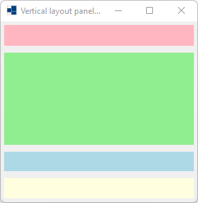
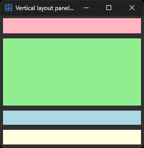
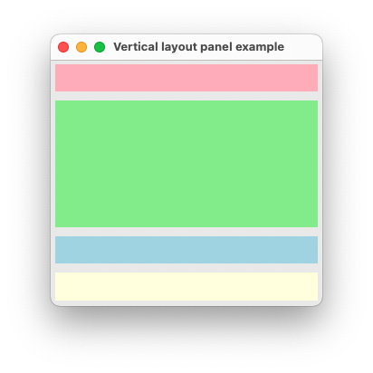
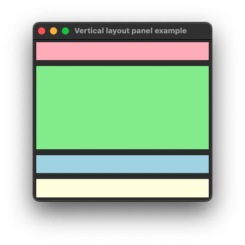
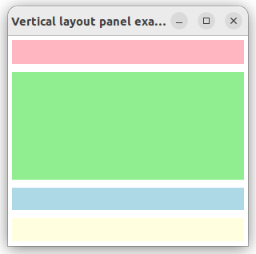
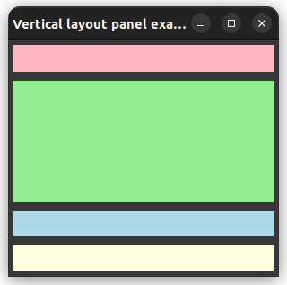

|
xtd
0.2.0
|
Loading...
Searching...
No Matches
vertical_layout_panel.cpp
demonstrates the use of xtd::forms::vertical_layout_panel container.
- Windows
- 

- macOS
- 

- Gnome
- 

#include <xtd/xtd>
class form_main : public form {
public:
form_main() {
text("Vertical layout panel example");
controls().add(layout_panel);
layout_panel.controls().add_range({light_pink_panel, light_green_panel, light_blue_panel, light_yellow_panel});
layout_panel.control_layout_style(light_pink_panel, {30, size_type::absolute, true});
layout_panel.control_layout_style(light_green_panel, {.70f, size_type::percent, true});
layout_panel.control_layout_style(light_blue_panel, {.15f, size_type::percent, true});
layout_panel.control_layout_style(light_yellow_panel, {size_type::auto_size, true});
layout_panel.dock(dock_style::fill);
layout_panel.padding(forms::padding(5));
light_pink_panel.back_color(colors::light_pink());
light_green_panel.back_color(colors::light_green());
light_blue_panel.back_color(colors::light_blue());
light_yellow_panel.back_color(colors::light_yellow());
}
static auto main() {
xtd::forms::application::run(form_main());
}
private:
vertical_layout_panel layout_panel;
panel light_pink_panel;
panel light_green_panel;
panel light_blue_panel;
panel light_yellow_panel;
};
startup_(form_main::main);
static void run()
Begins running a standard application message loop on the current thread, without a form.
#define startup_(main_method)
Defines the entry point to be called when the application loads. Generally this is set either to the ...
Definition startup.hpp:168
Generated on Tue Oct 28 2025 14:58:28 for xtd by Gammasoft. All rights reserved.